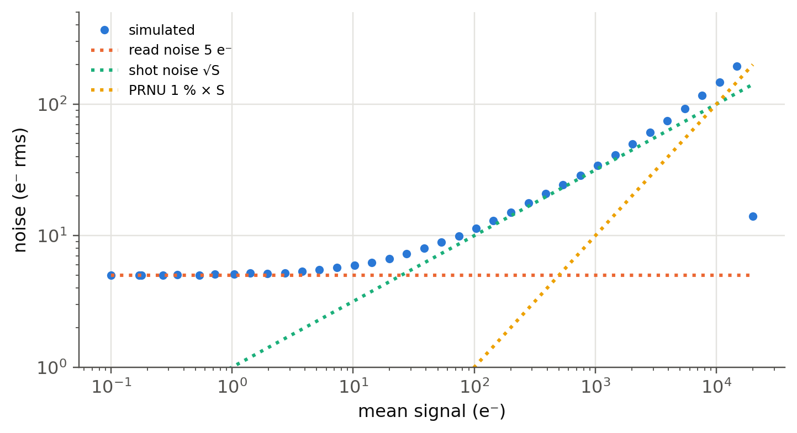

12 Image sensors: CCD and CMOS
 Run this chapter’s code in Google Colab (no installation).
Run this chapter’s code in Google Colab (no installation).
Slides 108–111 (CCD and CMOS image sensors, image sensing with a pixel array, colour imaging with a Bayer filter or three CCDs), 112 (active-matrix readout), 113 (CMOS pixel, microlenses and colour filters), 114–117 (the CCD element and three-phase charge transfer) and 118–120 (full-frame, frame-transfer and interline-transfer architectures).
12.1 Key relations
An image sensor is an array of photosensitive pixels, each integrating the photogenerated charge during the exposure time (slide 110). The signal of a pixel, in electrons, is
\[ S=\eta\,\Phi_{ph}\,A_\text{pix}\,t_\text{exp}\le N_\text{FW}, \]
with \(\eta\) the QE (including the fill factor and the microlens), \(\Phi_{ph}\) the photon flux density, and \(N_\text{FW}\) the full-well capacity. The noise combines the photon shot noise of the signal, the shot noise of the dark charge \(D\) and the read noise \(\sigma_r\) of the output amplifier (in electrons rms):
\[ \text{SNR}=\frac{S}{\sqrt{S+D+\sigma_r^2}},\qquad \text{dynamic range}=\frac{N_\text{FW}}{\sigma_r}. \]
CCD. Each pixel is a MOS capacitor: a positive gate voltage on p-type Si creates a depletion region, a potential well that stores the photogenerated electrons (slide 115). By clocking three interleaved gate phases the wells move and the packets are shifted, without mixing, one gate at a time (slides 116–117): three clock steps move a packet by one pixel. The packets are shifted row by row into a serial register and then pixel by pixel to a single, very low-noise output amplifier (slide 118). A packet that is transferred \(N\) times with a charge-transfer efficiency CTE keeps a fraction \(\text{CTE}^N\). Frame-transfer and interline architectures (slides 119–120) add a light-shielded storage area so the next exposure can start while the previous frame is read.
CMOS. Each pixel has its own photodiode and transistors (reset, source follower, row select: the 3T pixel of slide 113) and is addressed like a memory (row and column decoders, active matrix of slide 112). There is no charge transfer across the chip, the readout is fast and parallel, and the logic, ADCs and image processing are integrated on the same chip; the price was historically a higher read noise and fixed-pattern noise, now largely overcome. Colour is obtained with a Bayer mosaic of red, green and blue filters (twice as many green as red or blue pixels, like the eye’s sensitivity) or, in professional cameras, with three sensors behind a trichroic prism (slide 111).
12.2 Live panel: three-phase charge transfer (slides 116–117)
Each packet spreads under two gates when both are high (t₂, t₄, …) and is squeezed under the next one when the previous gate drops. After six steps every packet has moved by three gates, i.e. one pixel: the packet that started under G1 is under G4. The packets never mix because a low gate always separates them. The lost charge does not vanish: it is left behind and appears in the trailing pixels as a smear.
12.3 Live panel: a simulated exposure
The scene below is converted into photoelectrons with Poisson statistics, the read noise is added, the full well clips bright pixels, and the CCD transfer loss smears charge along the readout direction (to the right and downward in this sketch).
Things to try: at 10 photons per pixel the image is dominated by Poisson noise and the bars are barely visible; at 10⁴ it is clean. Set the read noise to 30 e⁻: the dark patch disappears in the noise at low light, while bright parts are unaffected (read noise matters only in the shadows). Reduce the full well: the disc saturates and its edges flatten (no “blooming” is modelled). Reduce the CTE to 0.999: the bright disc smears to the right and the far corner loses most of its charge; space-qualified CCDs degrade this way under radiation damage.
12.4 Worked example: a professional full-frame CCD (slide 108)
The Teledyne-DALSA FTF6040C has an imaging area of 36 × 24 mm² with 6 µm × 6 µm pixels. How many pixels? How many transfers does the farthest pixel undergo (three gates per pixel)? What CTE is needed to keep 99 % of its charge? How long does a readout take at 40 Mpixel/s through one output?
Show the Python
nx, ny = round(36e-3/6e-6), round(24e-3/6e-6)
Ntr = 3*(nx + ny)
cte_needed = 0.99**(1/Ntr)
rows = [("pixels", f"{nx} × {ny} = {nx*ny/1e6:.0f} Mpixel"), ("gate transfers of the farthest pixel", f"{Ntr}"),
("CTE for 99 % retention", f"{cte_needed:.7f} (1 − CTE = {1 - cte_needed:.1e})"),
("retention with CTE = 0.99999", f"{dl.cte_remaining(0.99999, Ntr):.1%}"),
("retention with CTE = 0.9999", f"{dl.cte_remaining(0.9999, Ntr):.1%}"),
("readout time at 40 Mpixel/s (one output)", f"{nx*ny/40e6:.2f} s")]
pd.DataFrame(rows, columns=["quantity", "value"])| quantity | value | |
|---|---|---|
| 0 | pixels | 6000 × 4000 = 24 Mpixel |
| 1 | gate transfers of the farthest pixel | 30000 |
| 2 | CTE for 99 % retention | 0.9999997 (1 − CTE = 3.4e-07) |
| 3 | retention with CTE = 0.99999 | 74.1% |
| 4 | retention with CTE = 0.9999 | 5.0% |
| 5 | readout time at 40 Mpixel/s (one output) | 0.60 s |
A CCD needs a CTE of 0.9999997 or better: 30 electrons lost per 100 million transferred. This astonishing figure is why CCDs were made in dedicated processes, and why CMOS sensors, which do not move charge across the chip, took over consumer imaging.
12.5 Photon transfer curve
Show the Python
rng = np.random.default_rng(1)
S = np.logspace(-1, 4.6, 40)
noise = []
for s in S:
prnu = 1 + 0.01*rng.standard_normal(20000)
e = np.minimum(rng.poisson(s*prnu) + rng.normal(0, 5, 20000), 20000)
noise.append((e.mean(), e.std()))
noise = np.array(noise)
fig, ax = plt.subplots(figsize=(7.5, 3.8))
ax.loglog(noise[:, 0].clip(0.1), noise[:, 1], "o", ms=4, label="simulated")
s = np.logspace(-1, 4.3, 100)
ax.loglog(s, np.full_like(s, 5.0), ":", label="read noise 5 e⁻"); ax.loglog(s, np.sqrt(s), ":", label="shot noise √S")
ax.loglog(s, 0.01*s, ":", label="PRNU 1 % × S")
ax.set(xlabel="mean signal (e⁻)", ylabel="noise (e⁻ rms)", ylim=(1, 500)); ax.legend(fontsize=8); plt.show()
TipGoing further
- Pixel size and diffraction. A lens of f-number \(N\) blurs a point into an Airy disc of diameter \(2.44\lambda N\) (Ch. 1). For 1 µm smartphone pixels at f/1.8 and 550 nm, how many pixels does the Airy disc cover? Compare with the Nyquist condition (two pixels per resolved period). Are 200 Mpixel phone cameras resolution-limited by the pixels or by the optics?
- Bayer demosaicing and aliasing. With one colour per pixel, each colour is under-sampled; fine patterns produce colour moiré. Simulate a Bayer mosaic of a chirped grating and interpolate it bilinearly.
- Backside illumination, deep trench isolation, stacked sensors. Modern CMOS sensors are thinned and lit from the back so that the wiring does not shadow the photodiode (QE > 80 %), separated by trenches against optical and electrical crosstalk, and bonded onto a second chip that carries the logic.
- Single-photon imagers. Electron-multiplying CCDs (an avalanche register before the amplifier, Chapter 11) and SPAD arrays
- reach sub-electron read noise. What excess noise factor does an EMCCD have, and why does it effectively halve the QE at high light levels?
- Rolling shutter. CMOS sensors read row by row; fast motion is sheared. Estimate the skew of a propeller filmed with a 30 ms readout.
NoteComplements
- Kasap, sec. 5.13; J. R. Janesick, Photon Transfer (SPIE Press, 2007): the bible of sensor characterisation.
- E. R. Fossum, “CMOS image sensors: electronic camera-on-a-chip”, IEEE Trans. Electron Devices 44, 1689 (1997).
- W. S. Boyle and G. E. Smith, Bell Syst. Tech. J. 49, 587 (1970) (slide 2); Nobel Prize in Physics 2009.
12.6 Try it yourself
- A smartphone pixel of 1 µm² with QE 0.7 is exposed for 1/60 s to an indoor scene giving 10⁻⁴ W/m² at 550 nm on the sensor. How many electrons does it collect? What SNR can be achieved with 2 e⁻ read noise?
- Why are there twice as many green pixels as red or blue in a Bayer filter? (Hint: photometry, Ch. 3.)
- With the exposure panel, find the photon level at which read noise and shot noise contribute equally for \(\sigma_r=5\) e⁻. Express it in terms of \(\sigma_r\).
- An interline-transfer CCD (slide 120) has a fill factor of only 30 %. How do microlenses (slide 113) restore the QE, and why do they fail for light arriving at large angles (fast lenses, image corners)?